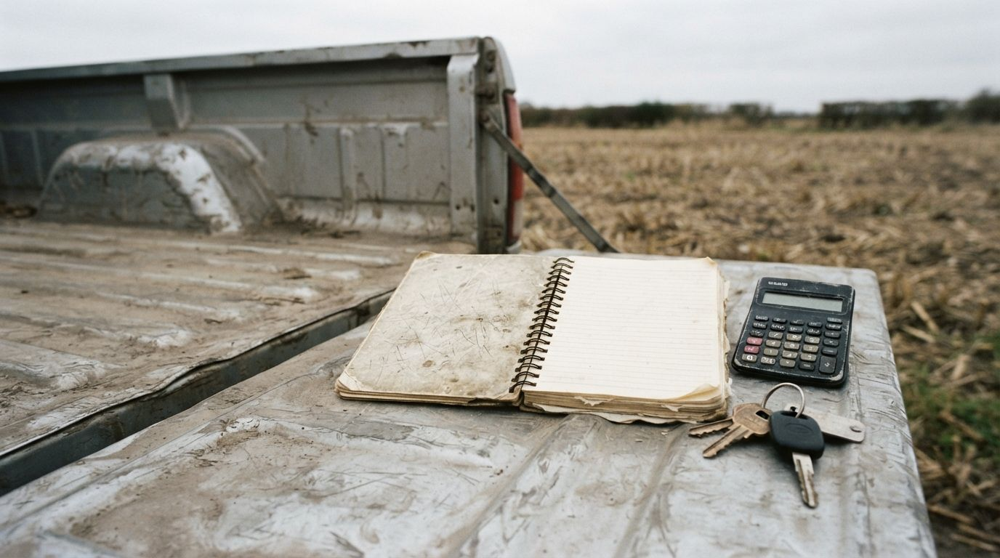

Quanto a sua lavoura realmente dá, e para onde o dinheiro está indo.
Produtividade real por hectare contra custo real por hectare. É esse número que decide se dá para investir, se dá para alongar e quanto dá para pagar — antes de qualquer conversa sobre prazo e juros.
Atendimento em Jataí, Rio Verde e região. Sigilo em todo atendimento.
O teste
Três perguntas que quase ninguém responde de cabeça.
Quanto custa o seu hectare?
Não a média da região, nem a estimativa do vendedor de insumo. O seu, com semente, defensivo, adubo, diesel, mão de obra, máquina, arrendamento e juros dentro da conta.
Qual talhão paga e qual carrega?
Sempre existe área que sustenta o resultado e área que come o resultado. Quando tudo é somado num caixa só, a segunda fica escondida atrás da primeira, safra após safra.
Quanto sai para a família por mês?
Sem pró-labore definido, a retirada varia com o que tem em conta. E o que tem em conta, muitas vezes, é dinheiro de custeio da safra que ainda nem foi plantada.
O que sai do levantamento
Número, não opinião.
O trabalho termina com um retrato da operação que dá para levar ao banco, ao contador e à mesa da família. É o mesmo levantamento que sustenta qualquer renegociação de dívida feita pelo escritório.
- Custo por hectare, por cultura e por safra
- Produtividade real em sacas por hectare, por talhão
- Margem de cada área: qual paga, qual carrega
- Mapa de dívidas por credor, garantia, encargo e vencimento
- Pessoa física e pessoa jurídica separadas, com pró-labore definido
- Ponto de equilíbrio em sacas: quanto precisa colher para fechar o ciclo
- Calendário de caixa da safra — quando entra, quando sai, onde aperta
Por que isso está num escritório de advocacia
Porque as duas coisas se decidem juntas. Cédula de crédito rural, garantia, contrato de arrendamento e barter são jurídicos — e são justamente os itens que mais pesam no caixa.
Separar o financeiro do jurídico é o que produz a renegociação que não se sustenta: prazo novo bonito no papel, e o mesmo furo no caixa dois anos depois.
Como funciona
Três etapas, sem virar burocracia nova.
-
Levantamento
Notas, extratos, contratos e o que você já anota do seu jeito. Não é preciso ter planilha pronta — a maioria não tem, e o levantamento existe para isso.
-
A conta
Custo, produtividade, dívida e retirada organizados no mesmo lugar, com o ponto de equilíbrio da operação em sacas.
-
Decisão
Com o retrato pronto, as escolhas ficam objetivas: onde cortar, o que renegociar, o que dá para investir e o que não dá.

Quem cuida do seu caso
Lucas Cabral, advogado de Direito do Agronegócio.
Escritório em Jataí, GO, dedicado ao produtor rural: crédito rural, contratos agrários e gestão financeira da atividade — as três coisas tratadas como uma só, porque na fazenda elas são.
O trabalho é feito perto de quem produz. Quando o caso pede, a conversa é na fazenda, com a papelada em cima da mesa da cozinha.
- Segurança
- Calma
- Racionalidade
- Estratégia
- Presença
- Respeito
Perguntas frequentes
O que se pergunta antes de começar
Isso substitui meu contador?
Não. O contador cuida da obrigação fiscal e contábil; o levantamento aqui olha a operação para decidir — custo por hectare, capacidade de pagamento, dívida e contrato. Os dois trabalhos convivem, e o seu contador costuma ser fonte de parte dos dados.
Não tenho nada organizado. Dá para começar assim?
Dá, e é o cenário mais comum. O levantamento começa com nota fiscal, extrato e o caderno onde você já anota. Organizar é parte do serviço, não pré-requisito dele.
Eu não tenho dívida. Isso serve para mim?
Serve, e funciona melhor. Saber o custo por hectare antes de contratar crédito, arrendar área nova ou trocar máquina é o que evita a dívida que depois precisa ser renegociada.
Quanto tempo leva?
Depende do tamanho da operação e de quanta informação já existe reunida. O prazo é combinado na primeira conversa, junto com a lista do que precisa ser separado.
Quanto custa?
Honorários são definidos caso a caso e combinados por escrito antes do trabalho, dentro dos parâmetros da tabela da OAB/GO. Uma operação de uma cultura e uma operação com três culturas e áreas arrendadas não dão o mesmo trabalho.
Primeiro passo
Comece pelo número da sua operação.
Preencha abaixo e o escritório entra em contato para entender o tamanho da operação e explicar o que o levantamento entrega no seu caso.